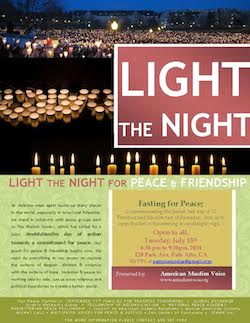

Friends,
We mourn the dramatically escalating violence in Gaza, Israel, and the West Bank, and the resistance of political extemists to international calls for a ceasefire. More than 170 Palestinians have died in Gaza in the past week alone, and Israelis are hiding in air-raid shelters throughout the south. As the death toll of innocent civilians grows, thousands more people are injured, tens of thousands displaced, and hundreds of homes destroyed, we reaffirm our commitment to peace and justice through the transformative power of nonviolence and the hard but necessary work of reconciliation.
 In solidarity with all who are working toward and praying for an end to the violence in Palestine and Israel, FOR welcomes you to join Jews and Muslims across our nation and throughout the world in a Day of Fasting tomorrow, Tuesday, July 15th. In solidarity with all who are working toward and praying for an end to the violence in Palestine and Israel, FOR welcomes you to join Jews and Muslims across our nation and throughout the world in a Day of Fasting tomorrow, Tuesday, July 15th.
Initially proposed by Eliaz Cohen (an Israeli poet/settler in Gush Etzion), the International Hunger Strike Against Violence is scheduled on the traditional Jewish fast day of 17 Tammuz, this year on July 15, which is also a day in the month-long fast of Ramadan. This day is in both Muslim and Jewish traditions a time of fasting from sunrise to sunset, arousing inner spiritual reflection and shared effort to turn from violence to compassion, from idolatry to celebration of the One.
Nationally, local expressions of this call are being organized by FOR members and allies. The American Muslim and The Shalom Center have taken leadership in the national call to gather Muslims and Jews for “serious and sorrowful conversations” and to break the fast after sunset in Iftar settings.
In Northern California, the American Muslim Voice Foundation (coordinated by FOR Martin Luther King, Jr. Award recipient Samina Sundas) is sponsoring Light the Night for Peace and Friendship from 6:30 to 9:30 p.m. in Palo Alto. In Oakland, FOR Freeman Fellow Rabbi Lynn Gottlieb is organizing a Ramadan and Tammuz Fast for Ceasefire and Peace starting at 6:30 p.m., gathering at Frank Ogawa Park downtown by the Federal Building.
In Memphis, the Mid-South Center for Peace and Justice (a FOR affiliated group) will hold a fast & vigil for peace in Palestine and Israel from 5:00 to 8:15 p.m.
On the east coast, the Interfaith Walk for Peace and Reconciliation (founded in Philadelphia in 2003 by individuals inspired by the Muslim-Jewish Peacewalk, a FOR project) has issued an open invitation for a day of fasting and to join the Peace Walk community for reflection, prayer, and Iftar fast-breaking at 7:30 p.m. on Tuesday at the Al Aqsa Islamic Center.
Rabbi Lynn, founder of Shomer Shalom Network for Jewish Nonviolence, has also offered a prayer that speaks our hearts:
As faith rooted people, we give witness to our belief that peace among people of all faiths and communities is possible.
As faith rooted people, we believe that peace among Palestinians and Israelis is possible.
We affirm the process of truth and reconciliation to achieve this goal.
As faith rooted people, we lament the loss of innocent life, especially the children who are victim to political and religious violence. Every child is a member of the human family which we embrace.
We pray for the safety and freedom of all people who suffer the horrors of war, incarceration, loss of land and livelihood and physical violence.
No more rockets, guns or missiles shall be fired; no more tanks shall destroy land and homes.
No more loss of life shall occur. No more calls for revenge shall be uttered.
In this time of violence, we call for an immediate and unconditional ceasefire.
We also call for an end to Israel's military occupation of Palestine, which we view as the root cause of the violence.
As people of faith, we place our trust, not in military might, but in The Creator's desire for acts of loving kindness and the pursuit of restorative justice as the true pathway to peace and security for all people. May Israelis and Palestinians create wahat al salaam, neve shalom, an oasis of peace in the middle east. And may peace spread upon the land.
Finally, we encourage all to continue to take action to press all parties to end the bombing as well as the structural violence that frames this period of renewed violence. Jewish Voice for Peace has issued a strong statement on the roots of the recent escalation and is inviting signatures to an open letter.
In peace,
Linda, Ethan, Kristin, and the team at FOR
|